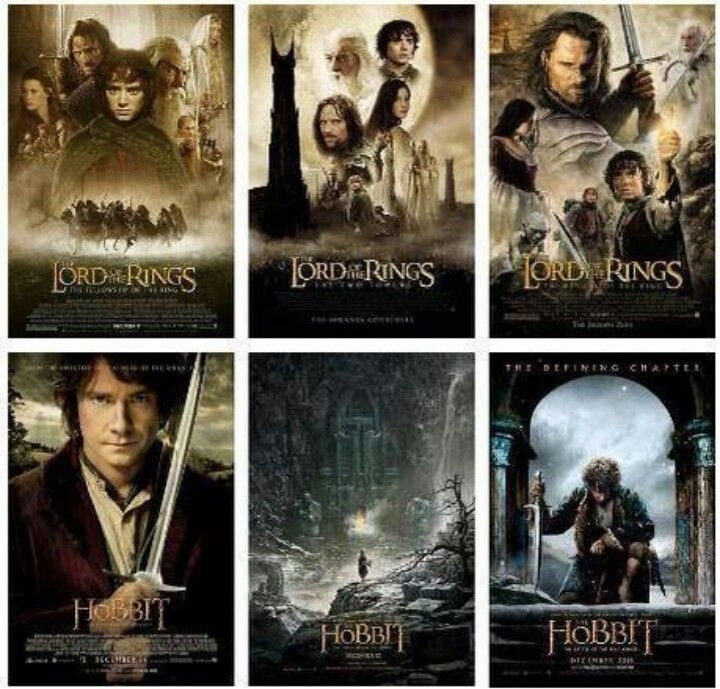

Movies
A variety of filmmakers considered adapting Tolkien's book, among them Stanley Kubrick, who thought it unfilmable,[98][99] Michelangelo Antonioni,[100] Jim Henson,[101] Heinz Edelmann,[102] and John Boorman.[103] A Swedish live action television film, Sagan om ringen, was broadcast in 1971.[104] In 1978, Ralph Bakshi made an animated film version covering The Fellowship of the Ring and part of The Two Towers, to mostly poor reviews.[105] In 1980, Rankin/Bass released an animated TV special based on the closing chapters of The Return of the King, gaining mixed reviews.[106][107] In Finland, a live action television miniseries, Hobitit, was broadcast in 1993 based on The Lord of the Rings, with a flashback to Bilbo's encounter with Gollum in The Hobbit
A far more successful adaptation was Peter Jackson's live action The Lord of the Rings film trilogy, produced by New Line Cinema and released in three instalments as The Lord of the Rings: The Fellowship of the Ring (2001), The Lord of the Rings: The Two Towers (2002), and The Lord of the Rings: The Return of the King (2003). All three parts won multiple Academy Awards, including consecutive Best Picture nominations. The final instalment of this trilogy was the second film to break the one-billion-dollar barrier and won a total of 11 Oscars (something only two other films in history, Ben-Hur and Titanic, have accomplished), including Best Picture, Best Director and Best Adapted Screenplay.[110][111] Commentators including Tolkien scholars, literary critics and film critics are divided on how faithfully Jackson adapted Tolkien's work, or whether a film version is inevitably different, and if so the reasons for any changes, and the effectiveness of the result.